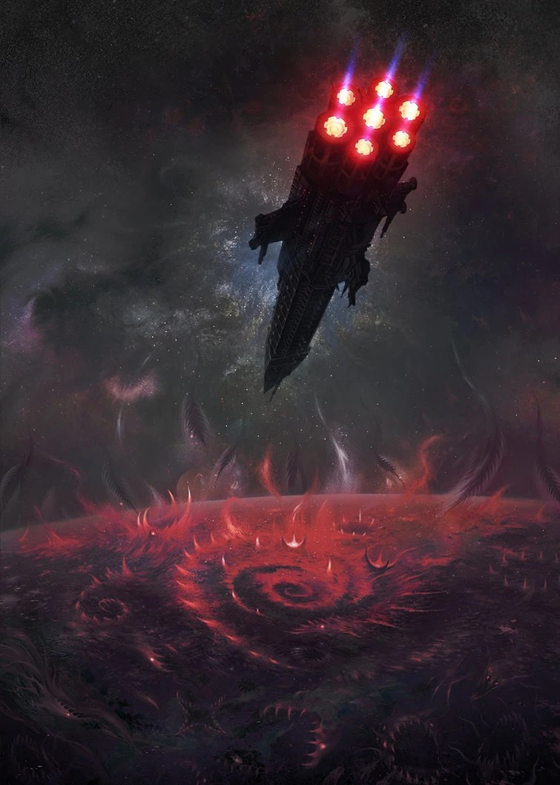
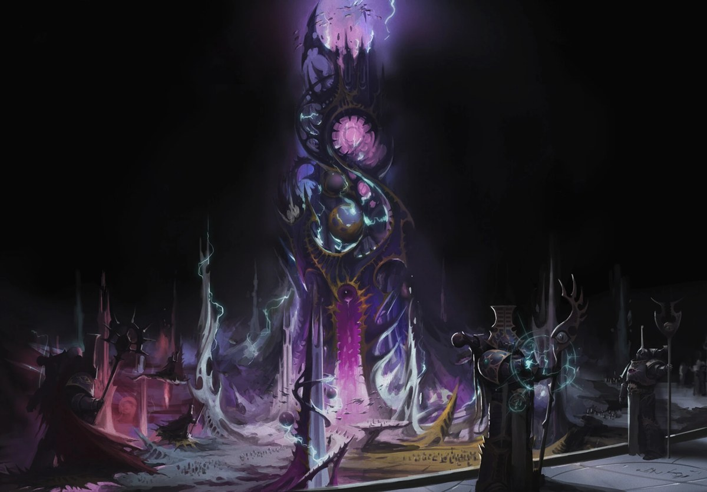

Daemon world
| Daemon world | |
|---|---|
| Class recorded by the Inquisition and the Administratum | |
 An Imperial vessel approaching a daemon world, from a sealed Ordo Malleus report Artwork © Games Workshop | |
| Administratum class | Daemon world; struck from the Imperial registry[a] |
| Typical tithe | None |
| Ruler | A Daemon prince, Daemon Primarch or greater daemon, in the name of a Chaos god |
| Imperial response | Quarantine by the Inquisition; raids by the Ordo Malleus and the Grey Knights |
| Population | Daemons, mutants, cultists and slaves; uncounted |
| Location | Chiefly the Eye of Terror, the Maelstrom, the Screaming Vortex, the Hadex Anomaly and the Great Rift |
| Examples | Planet of the Sorcerers, Medrengard, Sicarus, Plague Planet |
A daemon world is a planet that has been twisted and corrupted by the power of Chaos and the Warp, usually after being caught in a prolonged warp rift. On such a world the laws of nature give way to the will of its daemonic rulers and to the emotions of the mortals who live on it. The unthinkable has become part of the landscape: mountains of skulls, rivers that run backwards, cities of flesh, and distance and time that shift from moment to moment. Most daemon worlds lie within the great rifts of the warp, above all the Eye of Terror, where the boundary between realspace and the Immaterium is thin.[1][2]
Daemon worlds are usually ruled by a Daemon prince, a champion of Chaos who has been raised to daemonhood and who may reshape his domain as he wishes. The Daemon Primarchs of the Traitor Legions rule the best-known of them: the Planet of the Sorcerers of Magnus the Red, Medrengard of Perturabo, Sicarus of Lorgar and the Plague Planet of Mortarion. The four great powers of Chaos, Khorne, Tzeentch, Nurgle and Slaanesh, continually contest these worlds, and armies of daemons and mortals fight for generations to decide which of them will hold a world in the warp.[3][2]
The Administratum removes a world from its registry when it is recorded as a daemon world, and the Inquisition keeps the records under seal. Those within the Imperium of Mankind are quarantined by the Inquisition, but they are rarely subject to Exterminatus, because the shifting nature of reality around them makes any attempt to destroy them useless. For that reason the Inquisition acts with great haste and no mercy against any world where the forces of Chaos have gained a hold, so that it is not made into a daemon world that can never be removed. Since the opening of the Great Rift in 999.M41, Imperial reports record new daemon worlds forming along its length.[2][1]
Nature
[edit]Daemon worlds were once planets of the ordinary kind, made and governed by natural laws. Some catastrophe, usually an incursion of the warp, has claimed them entirely, so that they form lasting islands of the Immaterium in the midst of realspace. A daemon can pass from the warp to such a world without hindrance, and the world is bound by nothing but the whim of its ruler and the collective unconscious of its inhabitants. The Imperium's scholars have observed that each daemon world is a small reality of its own, and that no two are alike.[1][3]
The servants of the Dark Gods regard a daemon world as a reward. A Daemon Prince who has conquered a world, or who has drawn one out of realspace into the warp, receives it from his patron as a gift to be ruled as he sees fit. He then uses his powers to reshape it to his liking. Some worlds have oceans of boiling viscera, and others are shaped into grinning skulls that can be seen from millions of kilometres away. Some have landscapes that could exist only in the warp, with mountains that float in the sky or volcanoes into which the lava flows backwards.[2][3]
Worlds reflect the god who holds them. Worlds of Khorne are scenes of endless battle, worlds of Nurgle are swamps of disease and decay, worlds of Tzeentch are crystalline and ever-changing, and worlds of Slaanesh are places of excess and cruelty. A world devoted to Chaos Undivided, or ruled by a master who serves no one god, may show something of all four.[3][4]

Creation
[edit]A world becomes a daemon world in several ways. Some were human or Aeldari worlds swallowed by the Eye of Terror when it formed at the birth of Slaanesh in the 30th millennium, and remain within it. Others are drawn into the warp when a warp storm or rift engulfs them for a long period, or when a ritual of great power tears open the boundary of realspace. In 656.M40 the Hadex Anomaly opened in the Jericho Reach, and worlds drawn in and out of it, such as Venkrous, Coranin and Durell, were changed by the gods who claimed them.[3][5]

The change is not always the work of the warp alone. Bulwark, once a fortress world that guarded the capital of the old Jericho Sector, was not mutated by the Hadex Anomaly itself. Its own citizens committed the atrocities in the years after the Anomaly appeared, and the world became a charnel house of the Blood God. It is held up in Imperial warnings as a proof that a world may be lost to Chaos from within.[5]
Life on a daemon world
[edit]Inquisitorial visits to daemon worlds are short and are made only in dire need, so reliable accounts of life on them are rare. The few that exist agree that survival is costly and that a part of the soul is the first payment. Travellers describe being hunted by daemons across changing ground and meeting their worst fears, and seeing friends and loved ones die is a common theme. The laws of nature are not constants. Rocks bleed or cry out when lifted, and some tales tell of mortals who had to put their bodies together again each morning in order to rise. The luckiest of those who endure such worlds are said to be those already dead.[2][6]
Sages of forbidden lore have proposed that those trapped on a daemon world control some of its shape, or that the daemons need the constant outflow of mortal emotion in order to survive and breed. The greatest daemonologists of the Ordo Malleus have not settled the question. Many daemon worlds are devoted to one god or ruled by a single prince, but many more are cauldrons of unending war in which no single power rules. Places where daemons can find stability outside the warp are rare and much contested, and any human inhabitants are caught in the crossfire.[2][6]
Survivors
[edit]A planet is recorded as a daemon world while it is present in realspace, and it is in those rare periods that Imperial agencies such as the Adeptus Astartes may be sent to examine it. Sometimes, with lost relics and new knowledge, survivors are found with their sanity and souls intact. The Inquisition values them. Most other survivors are insane or catatonic, so those few are a source of information that cannot be obtained in any other way, and they are always kept apart after rescue so that corruption does not spread from them. Many of them have skills that are too valuable to waste, and some are taken as acolytes by Inquisitors.[6]
Survivors often have a stronger link to the warp than ordinary people who are not psykers. They sense daemons and psychic disturbances nearby, and the few who can describe it say it is like an infusion of colour in a grey world. They also bear the scars of exposure: odd compulsions, night terrors and paranoia are common. Inquisitors who use acolytes from a daemon world keep them on a short leash, because the threat of corruption does not leave them.[6]
Inhabitants and society
[edit]The population of a daemon world consists of the servants of its master: the warriors of his warband or Legion, cultists, and the mutants and slaves who labour in his domain. Mortals serve Chaos in two ways. They provide the manpower of its armies, above all of those that invade realspace, and they worship the Dark Gods and in so doing add to the gods' power in the warp. Only those who fight their way out of the slave-pits, prayer gangs and black manufactoria may fight in the name of Chaos and draw power from it. The rest serve through work and worship.[2][7]
Slaves are rewarded in the bitter way of Chaos, and learn to love the lash. Many populations work not in the daemonic foundries but in planet-sized prayer-hordes, in which millions are whipped to a frenzy of devotion while the warp resounds to their prayers. The Iron Warriors on Medrengard keep vast numbers of slaves to labour in their fortresses. The Thousand Sons on the Planet of the Sorcerers live in a city built in the likeness of lost Tizca of Prospero. Captives taken in raids on the Imperium often end their days on such worlds.[2][8]
Notable daemon worlds
[edit]Most known daemon worlds lie in the Eye of Terror, in the great storm called the Screaming Vortex, in the Maelstrom and within the Hadex Anomaly. Imperial records on them are sparse, and most come from visions of psykers, from raids and from the accounts of survivors.[2][5]
Worlds of the Eye of Terror
[edit]The most famous worlds are those of the Daemon Primarchs. Medrengard, the world of Perturabo, has been seen by powerful psykers as a vast fortress whose mountains are towers and whose dungeons reach the molten core, under a black sun in a white sky. Reconnaissance describes a bleak prison planet where slaves are worked to death, great warships tethered to its tallest towers and the Iron Warriors within.[2][8] Sicarus, the world of Lorgar and the Word Bearers, is covered with cathedrals, temples and monuments to Chaos Undivided, raised level upon level by millions of slaves, so that most of its buildings are subterranean.[9] The Plague Planet of Mortarion is a world where disease is the norm, where beastmen bloated with it boast of their afflictions and where champions of Nurgle fight for the chance to become Daemon Princes.[8]
The Planet of the Sorcerers, called Sortiarius, is the home of the Thousand Sons. After the Burning of Prospero in 004.M31, Magnus the Red used his powers to carry Tizca, the City of Light, through the warp to a new world in the Eye, and the planet is dark, rocky and volcanic, under skies of warp storms.[8][b] Others in the Eye include Bubonicus, a world of Nurgle with a ring of dancers who circle its equator until their disease changes them into plaguebearers, Drakaasi, the world of Khorne whose cities are built around arenas on a sea of blood, Oliensis, a world of Slaanesh shaped like a vast curled body, Temporia of Tzeentch, where the ground and the machines are a contradiction, and Xana II, a hell-forge of the Dark Mechanicum that sells daemon engines to all who can pay.[10][11][2]
Eidolon, once an Aeldari Maiden world, is split into four empires, each held by one of the great powers, which fight a war that has no end, and the World of Immortal Sorrows is a former Crone world of the Aeldari, now ruled by a Daemon Prince of Slaanesh who spends eternity torturing the souls of fallen Aeldari.[12][2]
Worlds of the Hadex Anomaly
[edit]Among the worlds of the Jericho Reach, the Anomaly has made several into daemon worlds. Venkrous, once an agri-world, has been rotted by Nurgle and now produces plants for poisons and drugs. Coranin, a feral world, was taken by Tzeentch, and its tribes came to venerate their mutated children until a daemon appeared and changed a boy into a Horror. Durell, a hive world, had a hive city made of flesh by Slaanesh. Magog, drawn into and out of the Anomaly many times, became a training ground of Chaos.[5]
| World | Master or patron | Notes |
|---|---|---|
| Planet of the Sorcerers (Sortiarius) | Magnus the Red | Home of the Thousand Sons since M31, after the Burning of Prospero in 004.M31 |
| Medrengard | Perturabo | Fortress world of the Iron Warriors, a world of black citadels |
| Sicarus | Lorgar | World of the Word Bearers, covered with temples of Chaos Undivided |
| Plague Planet | Mortarion | Domain of the Death Guard |
| Eidolon | All four powers | Former Aeldari maiden world; four warring empires |
| Oliensis | Slaanesh | Base of Noise Marine warbands |
| Torvendis | Slaanesh and others | Daemon world at the centre of the Maelstrom |
| Venkrous | Nurgle | Former agri-world of the Jericho Reach; changed after 656.M40 |
| Bulwark | Khorne | Former fortress world; lord is the Daemon Prince Krakiota |
Relations with the Imperium
[edit]The Imperium has no means of reclaiming a daemon world. Imperial forces seldom attempt to land on one, because even the presence of mortals is dangerous and many who return are found to be corrupted. The Grey Knights and the Ordo Malleus have raided daemon worlds to destroy particular threats, and some Space Marine Chapters have entered the Eye of Terror on crusades. In 999.M41 Colonel Schaeffer and his 13th Penal Legion raided Fool's Paradise and killed its ruler, the Daemon Prince Mk'lrathirix, though only two of the soldiers survived the battle. Such expeditions are rare and their records are sealed.[2][1]
Where a world is in danger of becoming a daemon world, the Inquisition may order its destruction by Exterminatus before the transformation is complete. In the Era Indomitus the opening of the Great Rift has led to new worlds being claimed along its length, and the Imperium has no certain count of them.[2][13]
Timeline
[edit]| Date | Event |
|---|---|
| M30 | Birth of Slaanesh; the Eye of Terror forms, swallowing the worlds of the Aeldari empire |
| 004.M31 | The Burning of Prospero; Magnus the Red later makes a new Tizca on a world of his own[c] |
| Early M31 | Traitor Legions flee into the Eye after the Great Scouring; the Daemon Primarchs take worlds of their own[d] |
| 656.M40 | The Hadex Anomaly opens in the Jericho Reach; Venkrous, Coranin, Durell and other worlds are claimed by Chaos |
| 999.M41 | The Great Rift opens; the 13th Penal Legion raids Fool's Paradise; new daemon worlds form along the Rift |
| From c. 000.M42 | Imperial records note the spread of daemon worlds in the Era Indomitus[e] |
See also
[edit]
Notes
[edit]- ^ No numeric classification code is recorded; such worlds are listed only in Inquisitorial annexes.
- ^ Imperial accounts of the Era Indomitus place the Planet of the Sorcerers in orbit over Prospero itself; the earlier records place it within the Eye of Terror.
- ^ The founding of the Planet of the Sorcerers is not dated in the sources; it is estimated from the sequence of the Heresy.
- ^ Date estimated from the sequence of the Great Scouring.
- ^ Estimated from the dates of the Rift.
References
[edit]- ^ a b c d Black Crusade: Core Rulebook (roleplaying game). Fantasy Flight Games. p. 326.
- ^ a b c d e f g h i j k l m n Black Crusade: The Tome of Blood (roleplaying game). Fantasy Flight Games. pp. 75-113.
- ^ a b c d e Black Crusade: The Tome of Fate (roleplaying game). Fantasy Flight Games. pp. 75-79, 84-102.
- ^ Codex: Chaos Daemons (4th edition). Games Workshop. p. 18.
- ^ a b c d Deathwatch: The Achilus Assault (roleplaying game). Fantasy Flight Games. pp. 87-90.
- ^ a b c d Dark Heresy: Enemies Beyond (2nd edition, roleplaying game). Fantasy Flight Games. pp. 26-27.
- ^ Realm of Chaos: Slaves to Darkness (1st edition). Games Workshop.
- ^ a b c d Codex: Chaos Space Marines (6th edition). Games Workshop. pp. 18-19, 22.
- ^ Reynolds, Anthony. Dark Apostle and Dark Disciple (novels). Black Library.
- ^ Codex: Khorne Daemonkin (7th edition). Games Workshop. p. 35.
- ^ Codex: Skitarii (7th edition). Games Workshop. p. 23.
- ^ Codex: Eldar Craftworlds (7th edition). Games Workshop. p. 7.
- ^ Codex: Imperial Guard (5th edition). Games Workshop. p. 23.